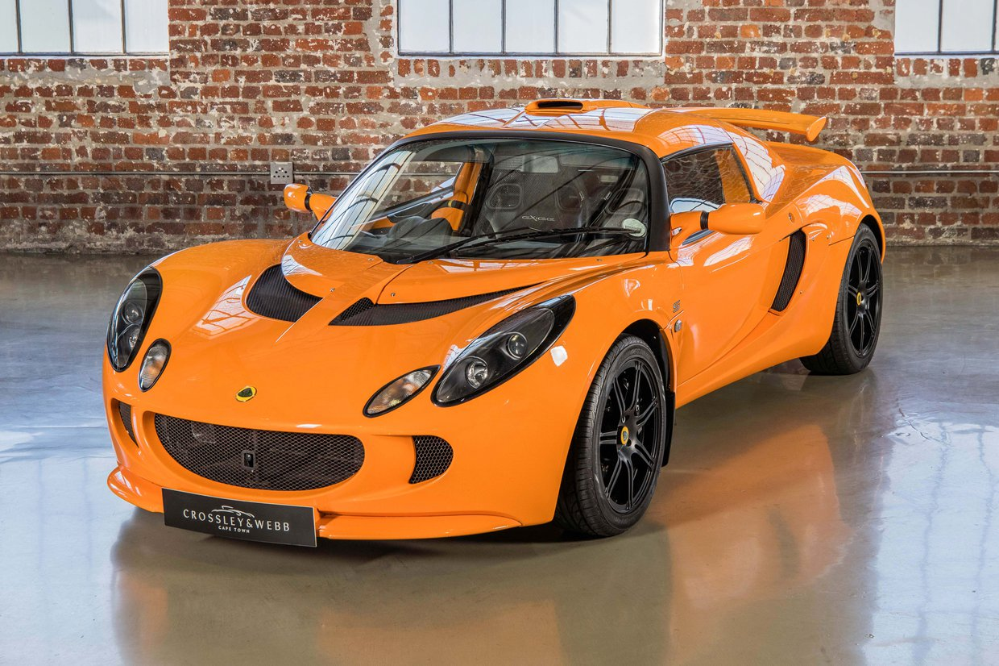
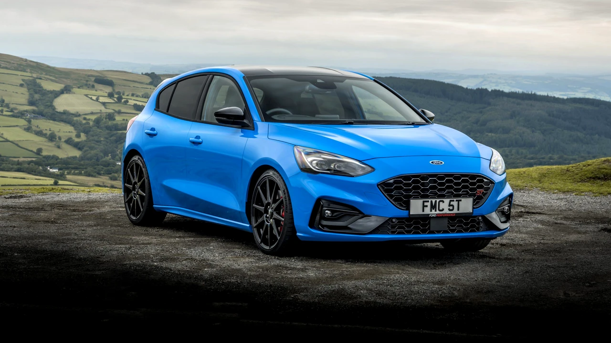
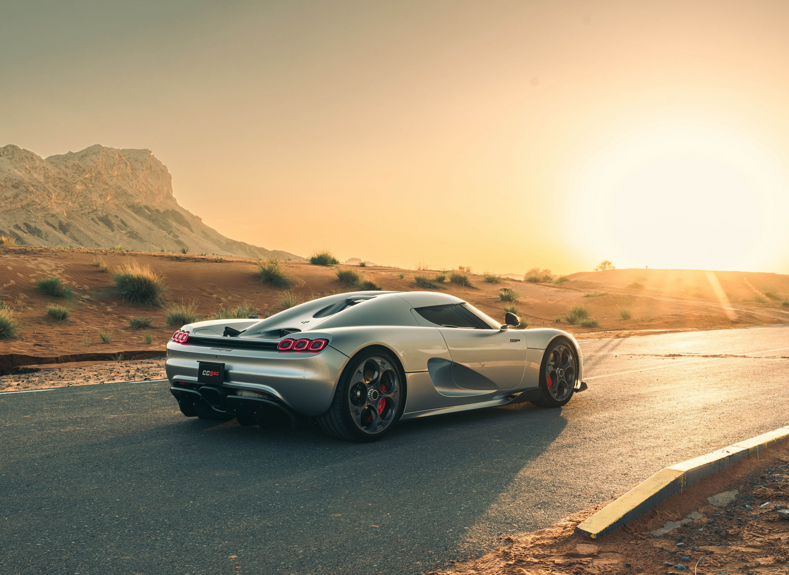

Lotus Exige S (2006)

Lotus Cars este un constructor britanic de automobile sport și de curse cu sediul la fostul RAF Hethel, un aerodrom din al doilea război mondial din Norfolk. Compania proiectează și construiește automobile de curse și de producție în serie. Lotus este deținută de Proton, care a preluat-o după falimentul fostului proprietar Bugatti în 1994.
Compania a fost fondată ca Lotus Engineering Ltd. de inginerul Colin Chapman, un absolvent al University College din Londra, în 1952. Prima fabrică a fost în grajdurile vechi din spatele Railway Hotel în Hornsey, nordul Londrei. Team Lotus, care a fost desprinsă de la Lotus Engineering în 1954, a fost activă și a concurat în cursele Formula 1 între 1958-1994. Lotus Group of Companies a fost fondată în 1959. Aceasta a fost formată din Lotus Cars Limited și Lotus Components Limited, care se concentra pe mașini de stradă și de a crea mașini competitive. Lotus Components Limited a devenit Lotus Racing Limited în 1971, dar entitatea recent redenumită a încetat funcționarea în același an.
Compania s-a mutat la o fabrică construită special cu acest scop la Chestnut în 1959, iar din 1966 compania a ocupat o fabrică modernă și o pistă de teste la Hethel, aproape de Wymondham. Acest loc este fosta bază RAF Hethel, iar pista de testare utilizează secțiuni ale pistei vechi.
Ford Focus ST (2021)

Ford Motor Company este o corporație multinațională americană situată pe locul cinci în lume la producția de automobile (2012). În 2006, s-a clasat pe locul doi în SUA la producția de automobile cu o cotă de 17,5% în spatele General Motors care a avut 24,6% cotă dar înaintea companiei Toyota 15.4% și a companiei DaimlerChrysler 14,4%. Ford s-a clasat de asemenea pe locul șapte în topul celor mai mari companii din SUA cu venituri de aproximativ $160,1 miliarde. În 2006, Ford a produs aproximativ 6,6 milioane de automobile și a avut 280.000 de angajați în aproximativ 100 de fabrici și alte facilități din întreaga lume. Compania a vândut 5,3 milioane de mașini în anul 2010, cu 771.000 mai multe decât în anul 2009[
Ford a fost tot timpul în top zece cele mai mari companii din lume în funcție de venituri iar în anul 1999 a fost printre cele mai profitabile companii din lume, și al doilea cel mai mare producător de automobile din lume.
Ford a introdus diferite metode de producere în masă a automobilelor și managementul în masă a unei forțe de muncă industriale, în special producția pe bandă rulantă a automobilelor. Combinația lui Henry Ford de fabrici eficiente, muncitori bine plătiți și prețuri mici a revoluționat lumea automobilelor iar acest proces a fost cunoscut sub numele de "fordism"
Koenigsegg CC850 (2024)

Koenigsegg Automotive AB este un producător suedez de automobile sport de înaltă performanță cu sediul în Ängelholm. Mașinile lor prind viteze incredibile de peste 400 km/h.
Koenigsegg CC850 este o mașină sport cu motor central de producție limitată, produsă de producătorul suedez de automobile Koenigsegg. A fost dezvăluit pe 19 august 2022 la Pebble Beach, California, ca un omagiu adus CC8S. Construit pentru a comemora cea de-a 20-a aniversare a primei CC8S de producție, CC850 a fost inițial limitat la 50 de unități pentru a sărbători împlinirea a 50 de ani a fondatorului companiei, Christian von Koenigsegg, însă, din cauza cererii crescute, a fost anunțat șase zile mai târziu, pe 25 august 2022, că s-ar construi încă 20 de unități.
În ciuda numelui comun, CC850 nu împărtășește nicio componentă cu CC8S original și se bazează în schimb pe Koenigsegg Jesko. Similar cu Jesko, CC850 are aceeași suspensie multilink față și spate, care constă din brațe duble, amortizoare hidraulice și gaz-hidraulice, cu amortizoare Triplex în spate. Direcția este prin cremalieră și pinion, cu transmisia proprie Koenigsegg cu 9 trepte, care trimite puterea către roțile din spate. CC850 are, de asemenea, o caracteristică numită Engage Shifter System, care permite șoferului să simuleze șase trepte de schimbare manuală cu o pedală de ambreiaj fizică, spre deosebire de paletele de schimbare. Christian von Koenigsegg susține că, cu această caracteristică, CC850 „trebuie să fie cea mai rapidă mașină manuală pe o pistă de curse la care mă pot gândi”. Motorul este, de asemenea, împrumutat de la Jesko, cu turbocompresoare mai mici, rezultând o putere de 1.185 CP (1.169 CP; 872 kW) la 7.800 rpm cu combustibil normal sau 1.385 CP (1.366 CP; 1.019 kW) pe E85. Cuplul maxim este de 1.385 N⋅m (1.022 lb⋅ft) la 4.800 rpm. Roțile din aluminiu forjat (20" x 9,5" față, 21" 12,25" spate) sunt încălțate cu Michelin Pilot Sport 4S (265/35R-20 față și 325/30R-21 spate). Puterea de oprire este asigurată de un set de etriere cu 6 pistoane de 410 mm (16,1 inchi) pe roțile din față și etriere de 395 mm (15,6 inchi) cu 4 pistoane pe spate.